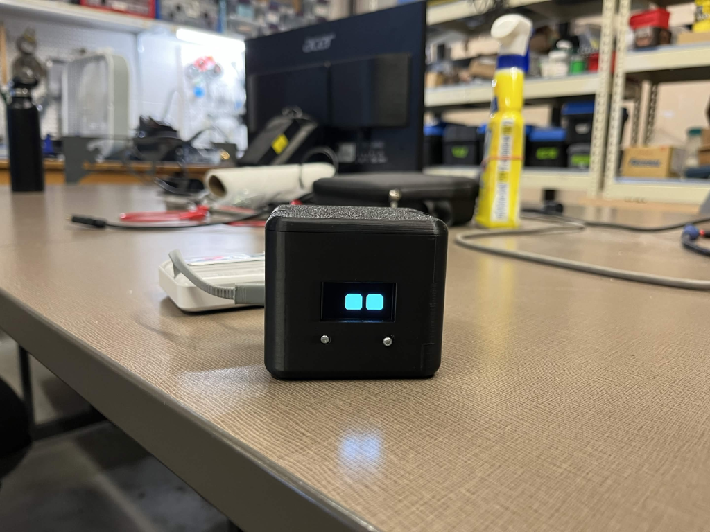
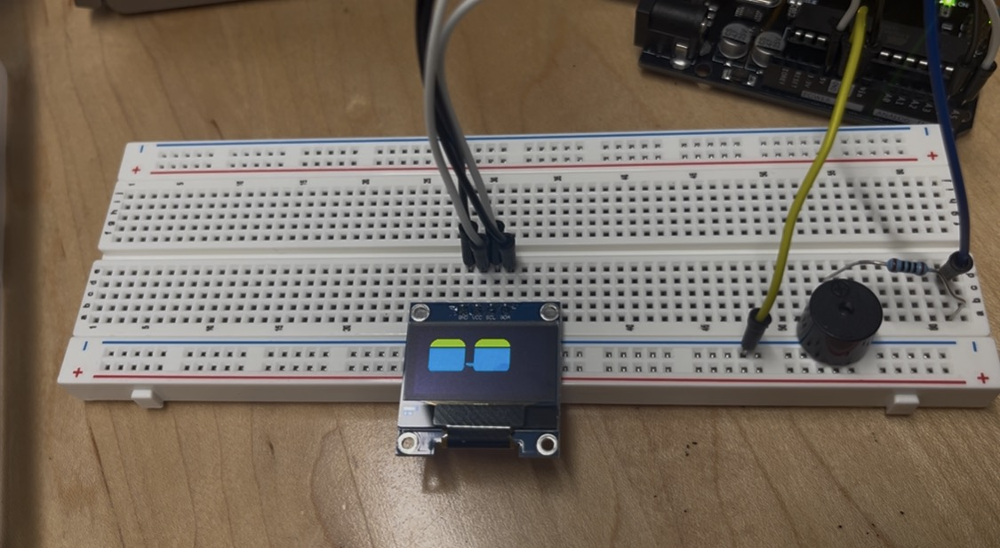
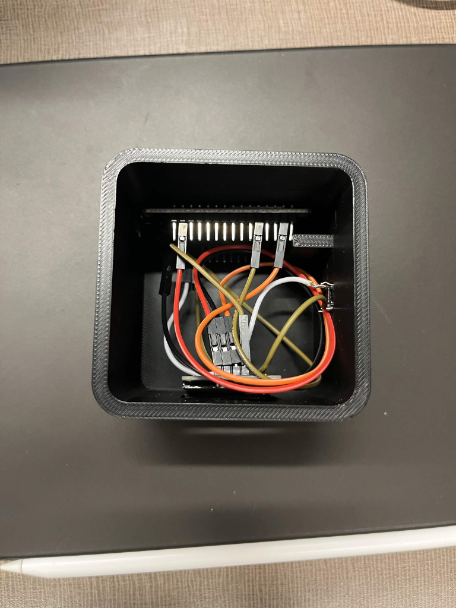

Toy Robot
Personal Project
CAD PreviewDrag to rotate · scroll to zoom
Prototype



The Design
A compact, 3D-printed robot with an ESP32, an OLED display face and a button to turn it on and off.
Design Process
- Modelled the body and lid in SolidWorks around the electrical components.
- Applied ±0.25 mm tolerances so the components fit securely inside the enclosure.
- Wired and soldered the OLED and power button, then assembled the printed prototype.
Results and Skills
Designed, wired and coded a working personal robot prototype.
- SolidWorks and Arduino IDE
- 3D printing and prototyping
- Soldering and electronics integration